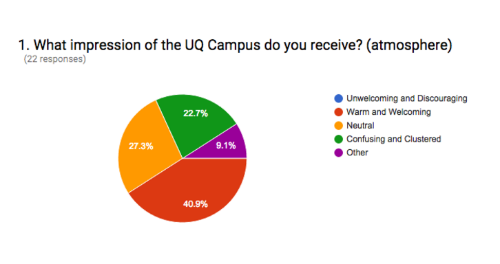

DECO1100 - Research Portfolio
The research portfolio is essentially a compilation of all the data that has been analysed. The objective of this is to spark ideas for conceptualizing project designs. Our group specifically focused on gaining a large scope on what data we could explore and exploit – we conducted meaningful interviews, obtained a wide breadth of survey responses and used literature reviews as a basin for understanding the assignment. This section of the portfolio will endeavor in delving and scrutinizing the data that has been collected and distinguishing trends, themes and insights. The next section of this portfolio will be dedicated to elaborating on this plethora of data.
Themes that emerged
- Theme 1:
- Many of people's favorite things are often social. In each of our interviews in which we asked about where people's favorite memories of the campus come from have been places in which they have socialized with their friends or met new friends; including, having lunch with friends in the parks on campus, attending society meet ups and activities, sharing drinks and joining in on cultural events in the Red Room. Additionally, our activity in which we plotted our 20 interesting facts of our research along a happy-sad spectrum and a social-individual spectrum was quite revealing. We found that the more individual facts appeared to correlate with being more sad, while as they increased in being more social they were happier. On a related note, we also noted that others not being social (e.g. spending all their time on their phones) is a bug for some people who would like the campus to be more social.
- Insights: Social activities shared with others have the potential to be very enjoyable to people on campus – many of the best moments that people have experienced on campus are often shared in the company of others. However sometimes it may be difficult for people to be completely engaged with socializing as university course work can be demanding and possible barriers to meeting new people.
- Directions: Our research and insights regarding this theme suggest a number of qualities that our final project may benefit from. If our project is able to promote enjoyable social interactions between people that is not awkward then we may be able to benefit the day's of those who interact with it. If this occurs then it is likely that we would also be better able to engage with these people. To do this requires us to facilitate good social interaction between people that happens not to be awkward which will require careful consideration. Also knowing what types of people who would be interacting would be useful for our design; i.e. a certain activity might be awkward between strangers but highly amusing between groups of established friends.
Theme 2:
- People enjoy engaging and sharing cultural events. In addition to people enjoying social things, these enjoyable social interactions often had a cultural element to them. Examples include participating in Chinese calligraphy, cultural festivals, sports viewing. One of our interesting facts we discussed amongst ourselves was whether the food on campus was tasty or not and in our discussions we noted that when the food is from our own culture we sometimes don't feel like it always represents our idea/expectations of what and how tasty the food should be. (Bug: international students wanting to meet/have more Australian friends).
- Insights: of the social activities that people appear to enjoy a lot, a stand out appears to be things that are cultural in nature. With such a diverse number of different cultures in the student population it means that students are able to share their culture with others of different cultures (e.g. food, festivals, beliefs, language, etc). Students of the same culture/background are also often able to come together to celebrate their mutual culture as well.
- Directions: A project that allows people to socialize via sharing their culture or hearing about other cultures (e.g. explaining interesting customs, or learning how to say words in their language) may allow for interactions between people that are impactful to their thinking or in some way enjoyable. Additionally, a lofty goal of our installation could be to help breach certain barriers between cultures that appear to exist on campus that have mostly negative effects (discussed in a related theme) via such interactions.
Theme 3:
- People have issues with crowding as well as navigating the campus. A large percentage of the bugs found for the St Lucia UQ campus bug list relate to issues that relate to campus facilities being too full. These facilities ranged from library computers, parking spots (a very common complaint), buses leaving the campus, and common walkways in the campus. These issues can be very individual in nature since, in many cases, it is often dependent on whether a person is lucky or unlucky whether crowding presents a serious issue. For example a person may luckily arrive at parking spot as another car is leaving it as soon as they arrive to uni or unluckily have to wait for half an hour to find a spot. It is interesting to observe people comment how happy they are that they found a spot easily because it suggests how low the expectations of parking availability at the UQ St Lucia campus are amongst those who drive there are.
- Insights: The underlying issue behind these crowding complaints seems to be that students and others on campus are very often time poor. This means that waiting for slow walkers, a car park, a computer, or at the bus stop can be incredibly frustrating and represents a waste of valued time. Additionally, it certainly does appear to be the case that UQ's St Lucia campus crowding has negative effects on its population's moods.
- Directions: The research and insights gained regarding this theme suggest that relieving the frustration of crowding issues would be very appreciated. There are three possible avenues of achieving this. Firstly, finding ways to reduce crowding. This could possibly be achieved by, for example, finding ways in which to inform students of which library is the least full at any time. The second avenue could be to address the issue of students being time poor; perhaps this could be achieved through means of educating or guiding students in how to best manage their time. The third avenue could be to allow students to participate in some form of multitasking during their wait to take their attention from waiting and possibly make better use of their time other than wait.
Theme 4:
- Most people's priorities at uni are to get good grades and while they might enjoy socializing, they will often sacrifice that for their number one priority.
Theme 5:
- From conducting the UQ survey and dispersing it to various facebook friends that attend uq, a prominent issue is general confusion. As seen in the appendix, the qualitative data (pie chart) indicates that nearly a quarter of participants in the survey thought that the uq campus was confusing or clustered. When we asked these individuals to answer as to why they thought this, we got some insight into the situation. Most people thought it was confusing due to the fact that the set up is very unintuitive and hard to remember. Surprisingly, a fair few 2nd years, 3rd etc... do occasionally get lost because of this reason. On the same token, the websites that UQ obliges students to sign to up to can also be quite confusing.
- Insight: Under the confusion theme, there are many insights that can be obtained. More often than not this confusion is created because people have not been informed enough. Students either say they didn’t know how to sign up to these UQ websites and to navigate themselves around. The key to tackling this issue is to find a way to inform people, however it needs to be done in such a way that it is memorable and a worthwhile experience.
- Future design directions: Provide an informative physical object that users can interact with and learn something from it. For example, there could be a fun fact located somewhere on the product that might grant information on the quickest routes to some UQ campus buildings.
Theme 6: International Students in UQ St Lucia
- International students in obvious are one of the biggest communities in UQ St Lucia. People from different background, culture and tradition are gathering in UQ, doubtlessly it is a very good chance for us to communicate and learn from other people. However, the culture diversity is always some kind of the barrier blocking the relationship of students. According to the data from the result of the interview, international students, especially the students from Asian countries, are likely to attach more attention on study rather than socialising. Most international students indicate that they are unaware of what the lecturer or tutor are saying. The language causes them have to work harder than local students. The language barrier, which is a common adversity for international students, are causing troubles and inconveniences in their everyday life. The saddest thing is, the weakness in English can be one of the reason they are being discriminated and derided. Many international students have been racial discriminated or have witnessed a racial discrimination. It is normal a person from a non-speaking English country speaks English with accent. However, some people are showing less respect and laughing on it, which will cause a huge embarrassment to the international students.
- Insight: The language barrier and cultural diversity are the two major challenges for international students. After the interview’s data are collected, it becomes reasonable that hearing an international students say he is going to study during the weekend rather than having fun. The pressure mainly comes from two ways, language and school fees. When international students are studying with other English-spoken students, they might feel self-abased. Furthermore, the school fees for international students are much more expensive than domestic students. It pushes them they have to pass all the courses. Otherwise, their families are going to pay more money. It is one of their worries when they are studying abroad. More help should be provided to international students while they are studying in a foreign country and living in a totally unfamiliar place. The most important thing is that the racial discrimination is an intolerable behaviour. It can be defined as an emotional bullying on other people. It is needed to note how hurt it could be for other people.
Theme 7:
- Design Trends According to the observations and surveys which had been conducted, I notice that the language barrier was a common problem which frequently happens to international students. Language is very important in daily life and we all use it as a tool to communicate with each other. It enables the person to express emotions, tell stories, share feelings that convey complex messages. International student may struggle to get information even communication. Negative emotional and cognitive response might be happened during the conversation.
- InsightClearly, language barrier affects many aspects and exists between domestic student and international student. The impact of these barrier may be significant.
Below are the strategies to resolve this situation:
1 Speak slowly and clearly – Even if you are pressured for time, try to not rush through communication and slowing down your speech. This definitely can clearing up the confusion during the conversation.
2 Ask for clarification – Please be polite and avoid assuming you have understood what have been said. Try ask for clarification to ensure you understood what others say.
3 Be patient – Cross-cultural communication takes more time which you cannot expect your communication go so ease as when you are communicating with someone from your own perspective.
4 Be specific – Clearly define what your expectations and deadlines are.
5 Frequently check for understanding – Try to practice reflective listening to check your own understanding and ensure others really understood what you’re saying.
*Sourced by international students from UQ that are in the midst of transition into a westernised society.
Theme 8:
- According to the research, when students (both domestic student and international student) have bad relationship with tutor that will influence their academic result and lead to a negative attitude of study. For example, when tutors ignore the language problem of international student and treat them as native speakers, and then international students cannot understand the knowledge. Also, if the tutors not respect to their job, the same problem happen to domestic student.
- Insights: Tutor is a very important role to students. They need help students to improve themselves and help students to learn the skills. During the semester, tutors have more opportunity to communicate with each student in the smaller group. So a good tutor should take care and to be patient to every student, for example, speak slowly to international students, explain more on the hard question or doing more group activities to help students to know each other. In addition, control the number of each tutorial under a small group that will give tutors more time to build relationship with students.
- Design directions: The design direction of this theme is improving the relationship between students and tutors. The way to change the relationship is conversation, so we need a project that allows people communicate and discussion on it. For example, people can talk to each other individually (tutor talks to specific student, student gave advice to tutor) or people have a personal file to introduce themselves.
Appendix 1
